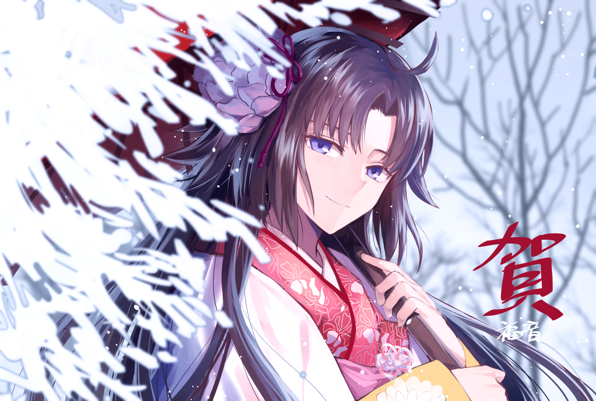

两仪式是type moon同人系列小说及动画《 空之境界》及其衍生作品的女 主角，拥有直死之魔眼的少女，也是四大退魔家族之一两仪家的继承人。
两仪式是奈须蘑菇笔下人物，《空之境界》的女主角。 出身于退魔四族之一的两仪家（另三家为七夜，巫浄和浅神），作为人为地生出双重人格者的两 仪家的次女出生，多人格的素质得到承认，被指定成为两仪家家主的继承人，在‘未来福音’时已 经成为了正式家主。起源是‘’（音KARA;无字、空空如也），名言是“只要是活着的东西，即使是 神也杀给你看”。‘式’这个名字具有公式、程式之意，意味这个躯体可如同电脑执行不同程式般执 行各种事情。两仪这个姓指的就是太极，式和织分别代表着太极中的两仪，即阴和阳，这样的区分 是因如此包含最多事物。式为阴性、女性的人格以及肯定之心；织为阳性，男性人格及否定之心
两仪式’这个存在的本质，并非由知性诞生、而是直接自 肉体唤醒的人格，如果说式和织代表着两仪中的阴和阳，其存在就相当于包含这两者的大圆太极， 起源为‘虚无’，亦是‘无’的本质。由于昏迷这段期间式的意识无法观看外界，而是不断看着内在的 虚无，因此在‘ ’中不断接触死亡概念的式，在醒来后得到能看到事物的死的直死之魔眼。
在与浅上藤乃战斗后，左手整个残废，之后换上橙子特制 的智能假肢，拥有捕捉幽灵的功能，也能将备用的匕首藏于其中。战斗时大多以匕首应敌。拥有高 速移动和闪电反应的能力，但腕力只是比普通少女要强一点的程度，有很强的忍痛能力。在经过父 亲的训练下，剑道实力坚强，已经有五段的水准，平时作为潜能隐藏起来，透过拿起太刀做出“自我 暗示”就能激发出来，在这状态下的式也是最强大的。曾配合五百年历史的居合刀——九字兼定和直死 之魔眼的力量击败荒耶宗莲。此外还精通合气道、我流格斗术等。
两仪式和志贵一样是能看见死之线的体质，无论是姓的“两仪”，还是名字的“式”都有它的意义，因此可说是比志贵还要高上数阶的直死之魔眼持有者。以作品来说，虽然两仪式设计出来比志贵早了两年，不过原本的构想是来自月姬，因此两仪式是‘月姬’中的主角远野志贵的原型角色（能力、人格设定方面）。而在月姬设定里中这个角色设计原型构想直接使用于远野志贵身上，至于在《空之境界》故事里则是对原来的角色设定进行修改采用为主人公。 因为两仪式从小知道自己是异常的，所以极度讨厌人类和讨厌自己。虽然因此养成冷淡的性格，但心中某处仍梦想着普通人的幸福。拥有“织”这个男性人格，但由于事故而失去了，之后成了能看到死线的体质。从昏睡中醒来后没有活着的真实感，虽然急躁地想通过杀人得到活着的真实感，但由于各种各样的偶然和善意的妨碍而没有成功的先例。一边抱着不确定的生活的真实感，一边也不断地来往于橙子的伽蓝之堂事务所的少女。 两仪式是名多重人格者。由于一般人无论条件如何，一生中亦只能穷极几项事物。而利用双重人格，就可以在不同方面上达到的境界，如同电脑执行不同程式而做到一般人类不能做到的事情，亦能利用多重人格达到‘根源之涡’。因此两仪家企图以在一个身体中装进多个人格的方式创造出全能者，在两仪家特有的密术下，使得式产生多重人格，在式体内拥有三种人格。和一般的多重人格不同，两仪家的多重人格者拥有一个具绝对肉体支配权的人格（式）和另一个代理人格（织）。式和织这两个人格同时存在，由式自己决定要由那个人格显现。 基本上，式和织拥有相同的思考方式、兴趣等个人特质，只是对事物喜好的顺序不一样。因为共用一个肉体，织的情绪（反转冲动）需要由式代为发泄，但式会刻意压抑这股冲动，而织这个负面人格必须承担式所压抑的情感，式的祖父就是由于不断破坏否定自己的双重人格，最后让自己成为混沌之人。在式六岁，能力提升到只要有道具什么都能杀害的时候，和式同样具有双重人格的祖父过世，式的祖父在死前曾清醒过来，并将最后的遗言交代给式，从此之后式与织接受彼此，顺利融入常识中。在式原先的想法中，“杀害”是织对所有事物产生的第一个情感，为了让‘两仪式’能勉强存在于道德之中，因此式一次次在内心杀害他，以控制织的非道德行为。但实际上，织的情感成因并非他嗜好杀人，而是因为他只懂得杀人。